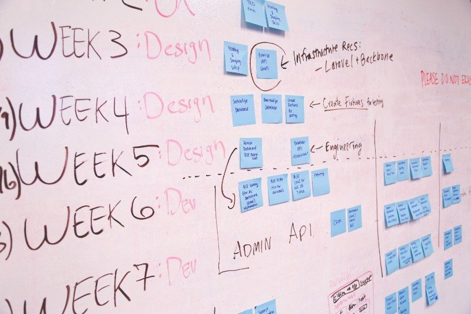

The social media content strategy of your company should naturally align with your overall marketing strategy and company objectives.
The first question you should ask yourself is:
How can you most effectively use content to achieve broader social media objectives?
As an example, let’s say if one of your social media goals is to increase leads obtained by the Millennial demographic by 10 percent. Your companies content strategy may involve a posting schedule for Snapchat. It may also include a strategy which includes buying Influencer shoutouts for Instagram live.
Your content strategy should be in tune with your organization’s general content strategy, given that it exists in the first place.
There are 3 Basic Steps for developing a content strategy.
1. Analysis Of Past Successful Content, Strategy And Target Audience
You should begin with analyzing and researching past content that drove a relatively higher engagement from your audience. Doing so will increase the probability of higher engagement in the future content you produce.
The best way to do that is by conducting and analyzing a social media audit. Social media platforms or advertising platforms have their own analytics base in general, e.g; google analytics, Facebook page insights. You must utilize those platforms and analyze the reports carefully while recording any important data you see.
Analyze Each Social Media Platform Differently
Keep in mind to treat each social media platforms following/fan-base as an audience with a different state of mind. During your social media content strategy audit be sure to label performing posts with the specified network and not mix them. This will give you a much clearer vision of what content is converting better on which medium. DO NOT make the mistake of assuming that engagement on one platform will be the same for others.
Your Facebook audience may have a different engagement compared to your Twitter audience. For example, perhaps according to your results on Facebook, the most engaging content is ‘how-to ‘videos but your Pinterest following has a higher interest in short, inspirational anecdotes.
To analyze your content performance with more depth, test different approaches. Consider launching a small competition, a poll, a giveaway etc. and see how your customer base responds. If you decide to run a Youtube live Q&A every Saturday, you could pose more questions to your audience and get to record valuable data in the form of their opinions.
If you decide to run a giveaway, you could measure average engagements on different products and get insight into which product is more liked. So by testing different approaches, you’ll get a much clearer vision of your audience’s interests and needs, all the while being equipped with new ideas and strategies to use for the future.
Competitor analysis
Analyze your competitors’ social media content strategies and ideas and get inspired by them but do not copy them. Instead, make yours even better than theirs or copy what they are doing in a better or unique way.
Have a keen eye for the types of topics, niches, and keywords being targeted by your competitors. Ask yourself:
“Can I add their strategy in my own strategy”
“Can I target the topics my competitors are targeting? ”
2. A list of content-specific goals and objectives

Now that you’re done with analyzing your social media content strategy, target audience and popular content, the next step is to form a plan with goals.
When setting goals, it’s a good rule of thumb to set a performance target as well as goals for individual pieces of content. As an example, one objective you could set in your strategy is to decrease the bounce rate to a landing page from Twitter by 10% in 3 months.
Another example of a goal can be the promotion of 3 different copies of a lead magnet aiming to cap a total of 1000 leads from that landing page.
Make a list of these goals and list them by priority. Link the goals with each other and form co-relations between them. It’s also important to have a detailed discussion with content creators in your organization, like your copywriters, and share previous content data with them to influence the next content being created.
This, of course, will also mentally prepare your employees to complete their work with a much more goal-oriented mind.
3. Distribution of your content
The final execution step for your social media content strategy will be the distribution.
Initially consider the type of content you’ll be distributing on different platforms and decide how often will that be happening.
Before posting content, make sure to look back at the important analytic data you gathered from the social media audit. Then, carefully compare it with the content ready to be distributed.
Research on new and trending ways to market content such as chatbots, podcasts, live video etc. Test which of the new trends work best with your content type.
However, whatever test you make, be sure to maintain your brand’s style throughout your communications.
The next step after that is to create a timeline for content distribution. The number of times you wish to post is different for all brands and will require some testing and optimization. In order to determine and optimize what converts the best for your brand on each network, it is advised to test the amount AND type of posts that will be optimal for the said platform.
As an example, let’s say your engagement drops after a specific test you made, you shouldn’t go further beyond the limitation you just discovered and amend your strategy in accordance with your new discovery. Make sure that you’re considering your posting schedule relative to the respective network as the schedule will be different for all the channels.
The whole schedule, testing, and optimization you will perform will later refine itself into a very neat, realistic and laid out plan that will greatly benefit you in the long run. Like for example, you will get a very strong idea of how much content you need, the quality of content and how often do you need it.
Create Documents And Share Them With Your Team
Creating documents is very important and beneficial for you and your team. A properly structured document with a good layout will be of great value to everyone when in the midst of forming a social media content strategy. They should be structured in a way so that it can be used as a guide for future references. They shouldn’t just be created and forgotten.
We recommend saving your strategy in a digital format, such as a google doc. This will make it very editable and accessible.
Closing Words
Having a well-thought-out strategy in marketing is something that systematizes and eases the process of many complex scenarios.
“The best CEOs I know are teachers, and at the core of what they teach is strategy.”
― Michael Porter
Shaheer says
Thanks for the article Jarvee!
I just wanted to say that THANK you for pointing out to people that their social media content strategy should align with their GENERAL content strategy.
Many people treat their content strategy for social media in a completely different way. The only thing that should be different, as you pointed out, is the TYPE of content we post on different platforms.
Logan says
Thank you for your great remarks Shaheer, that is highly appreciated. You are completely right, this is a big problem for many brands!
Annalisa says
In my opinion, sometimes COMPLETELY copying your competitors is fine as long as one does their homework on its effects.
Didn’t Instagram copy Snapchat stories? If big brands can do it then so can smaller brands, however, of course, one should do their homework first.
Logan says
Very well put Annalisa!
Augustus says
It’s truly a shame to see so many brands and companies post the same type of content and all their social media platforms. They think that they’ll have to curate or create content only once and with a click of a button share it everywhere.
Then they whine when they can’t properly optimize their marketing strategy. people these days I swear….
Logan says
Which is exactly why those who do their research properly, win in entrepreneurship!
Shakeel says
Thanks for sharing this article Jarvee, I was initially confused with my social media content strategy but now I’m much more clear on everything.
I wanted to add that Microsoft office is also a good way of sharing documents, in my opinion, better than google docs.
Jonathon says
Another golden nugget by Jarvee!
The best way to get to know your audience, in my opinion, is by gathering data about them, and if its in the form of giveaways, polls, or competitions, then you’ll have a very big database assuming you have a large audience.
Logan says
Thanks for your compliment and advice Jonathan!
Lester says
What tools would you suggest for distribution of content?
Logan says
There are many. Have you tried Jarvee? It has a free trial as well. We personally use Jarvee for marketing, I’m sure you’ll love it!
Graig says
Trello, slack, Microsoft office and google docs should all be used together for maximum productivity for the whole team. I remember finding a 1 stop solution but then later found out a combination of these works great!
Logan says
Thanks for the advice Graig!
Chase says
Each social network is different, it has different type of audience and it should be definitely treated differently. But in general your overall social media strategy should go towards the same goal and create the same brand image.
Kimberley says
For distribution of my content I use Jarvee and I’m in love with it! It helps me to set the frequency and the timing for all my different social media platforms, and much more. It saves me a lot of time and it enables me to automatically post at the best performing time, which gave me awesome results. Thank you for the article Jarvee team! <3
Emir says
As in all life areas, social media marketing require good strategy. It’s better to spend more time to develop good strategy, than to spend time on fixing what we did wrong without any strategy.
Annabell says
Using a simple, clean and properly structured template is beneficial for many different processes within the company as well for the planned content strategy. This kind of document will be useful for all members of the team that work on the same accounts or campaigns.
PabloNieto says
Distribution is the last, but most tricky part of each strategy. We can have the best product/service, but, if we don’t know how to distribute them, what tools to use, we can throw everything in the water.
Regge Regge says
Thanks for sharing this great article. There are lots of things that we can add to our existing plans and strategies after reading this great article.